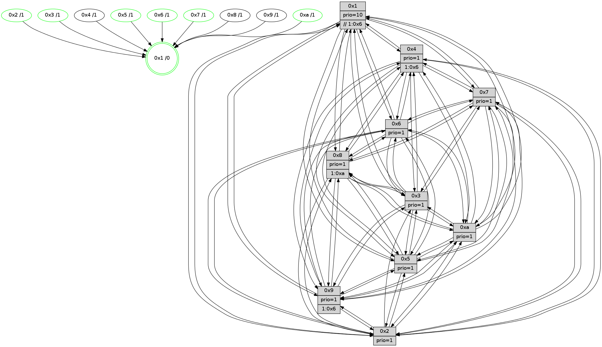

>> << IDX [start] -100 -25 -5 +0 +5 +25 +100 [1145.58289313]
 Previous packets
----------------------------------------------------------------------
1140.065975 beacon01(faad) #0 coord=01,02,03,04,05,06,07,0a,09,08 cycle=688.0ms assoc
-- color-indic=1 64 bb 1b
1140.075959 beacon02(faad) #0 coord=01,02,03,04,05,06,07,0a,09,08 cycle=688.0ms assoc 64 28 2a
1140.085958 beacon03(faad) #0 coord=01,02,03,04,05,06,07,0a,09,08 cycle=688.0ms assoc 64 52 67
1140.095959 beacon04(faad) #0 coord=01,02,03,04,05,06,07,0a,09,08 cycle=688.0ms assoc 64 25 8d
1140.105958 beacon05(faad) #0 coord=01,02,03,04,05,06,07,0a,09,08 cycle=688.0ms assoc 64 5f c0
1140.115957 beacon06(faad) #0 coord=01,02,03,04,05,06,07,0a,09,08 cycle=688.0ms assoc 64 d1 17
1140.125958 beacon07(faad) #0 coord=01,02,03,04,05,06,07,0a,09,08 cycle=688.0ms assoc 64 ab 5a
1140.135964 beacon0a(faad) #0 coord=01,02,03,04,05,06,07,0a,09,08 cycle=688.0ms assoc 64 da 51
1140.155965 beacon08(faad) #0 coord=01,02,03,04,05,06,07,0a,09,08 cycle=688.0ms assoc 64 2e cb
1140.168784 [Hello(5): seq=728 sym=7,6,4,3,1,9,8,10,2 sysInfo=hasWarning stat=7:8,1,5,13/6:6,4,7,2/4:6,12,13,12/3:7,0,12,13/1:5,11,13,1/9:10,0,15,9/8:3,7,9,1/10:14,0,12,8/2:5,2,15,6]
1140.172081 [Hello(2): seq=724 sym=4,5,7,6,3,9,8,10,1 sysInfo=hasWarning stat=4:0,11,2,10/5:5,8,9,0/7:10,2,3,14/6:0,4,12,11/3:8,1,10,8/9:11,8,11,6/8:8,11,3,10/10:6,15,0,10/1:4,13,5,0]
1140.175879 [Color(2) seq=304 @0:0 prio=1]
1140.177853 [STC(1) #0.174 tree-change,inconsistent-stability,stable,to-color d=0]
1140.180114 [Hello(3): seq=728 sym=1,7,6,2,4,8,9,10,5 sysInfo=hasWarning stat=1:11,3,7,0/7:9,5,10,12/6:0,2,1,0/2:3,13,12,2/4:6,9,13,11/8:6,6,7,3/9:5,8,0,13/10:12,0,11,4/5:14,12,4,15]
1140.183912 [Color(3) seq=357 @0:0 prio=1]
1140.188126 [Color(10) seq=317 @0:0 prio=1]
1140.191879 [Hello(6): seq=728 sym=2,3,5,4,7,9,8,10,1 sysInfo=hasWarning stat=2:8,12,0,7/3:7,13,12,11/5:10,12,13,1/4:6,2,7,5/7:7,4,2,12/9:11,0,1,7/8:9,13,12,4/10:2,12,3,12/1:4,7,11,1]
1140.196612 [Color(6) seq=360 @0:0 prio=1]
----------------------------------------------------------------------
1140.854105 beacon01(faad) #0 coord=01,02,03,04,05,06,07,0a,09,08 cycle=688.0ms assoc
-- color-indic=1 64 07 1e
1140.864087 beacon02(faad) #0 coord=01,02,03,04,05,06,07,0a,09,08 cycle=688.0ms assoc 64 94 2f
1140.874088 beacon03(faad) #0 coord=01,02,03,04,05,06,07,0a,09,08 cycle=688.0ms assoc 64 ee 62
1140.884088 beacon04(faad) #0 coord=01,02,03,04,05,06,07,0a,09,08 cycle=688.0ms assoc 64 99 88
1140.894088 beacon05(faad) #0 coord=01,02,03,04,05,06,07,0a,09,08 cycle=688.0ms assoc 64 e3 c5
1140.904088 beacon06(faad) #0 coord=01,02,03,04,05,06,07,0a,09,08 cycle=688.0ms assoc 64 6d 12
1140.914089 beacon07(faad) #0 coord=01,02,03,04,05,06,07,0a,09,08 cycle=688.0ms assoc 64 17 5f
1140.924093 beacon0a(faad) #0 coord=01,02,03,04,05,06,07,0a,09,08 cycle=688.0ms assoc 64 66 54
1140.934094 beacon09(faad) #0 coord=01,02,03,04,05,06,07,0a,09,08 cycle=688.0ms assoc 64 e8 83
1140.944093 beacon08(faad) #0 coord=01,02,03,04,05,06,07,0a,09,08 cycle=688.0ms assoc 64 92 ce
1140.955801 [Hello(8): seq=672 sym=5,2,3,4,9,6,7,10,1 sysInfo=hasWarning stat=5:11,9,3,0/2:5,4,15,10/3:14,9,3,15/4:8,15,6,10/9:9,7,5,3/6:12,6,1,13/7:4,4,0,0/10:9,14,8,4/1:15,5,10,0]
1140.958405 [STC(2)->1 #0.174 tree-change,inconsistent-stability,stable,to-color d=1]
1140.959778 [Hello(4): seq=728 sym=5,7,6,2,3,9,8,10,1 sysInfo= stat=5:1,0,14,15/7:5,3,1,1/6:5,3,15,12/2:6,7,8,14/3:1,15,15,11/9:10,13,4,11/8:10,0,15,5/10:10,13,8,13/1:7,13,11,1]
1140.962634 [STC(5)->1 #0.174 tree-change,inconsistent-stability,stable,to-color d=1]
1140.964332 [STC(8)->1 #0.174 tree-change,inconsistent-stability,to-color d=1]
1140.965892 [Color(1) seq=409 @0:0 prio=10 >>1.@6,1.@7,1.@8]
1140.967571 [Hello(10): seq=661 sym=6,2,3,8,7,5,9,4,1 sysInfo=hasWarning stat=6:8,5,1,6/2:7,13,2,10/3:6,10,5,11/8:14,12,8,1/7:9,11,15,6/5:1,14,12,14/9:1,15,0,2/4:5,0,0,0/1:13,13,4,1]
1140.970300 [Hello(9): seq=672 sym=2,5,3,4,7,6,8,10,1 sysInfo=hasWarning stat=2:9,8,9,8/5:2,13,9,5/3:12,0,15,15/4:8,8,2,1/7:4,2,0,1/6:9,13,6,11/8:4,11,13,3/10:9,14,0,4/1:12,10,11,1]
1140.973148 [STC(9)->1 #0.174 tree-change,inconsistent-stability,to-color d=1]
1140.975650 [STC(4)->1 #0.174 tree-change,inconsistent-stability,to-color d=1]
1140.982334 [Hello(7): seq=728 sym=2,3,5,6,4,8,9,10,1 sysInfo=hasWarning stat=2:12,14,7,1/3:15,5,6,15/5:3,2,4,1/6:13,9,4,9/4:15,13,4,1/8:6,5,12,1/9:2,1,8,1/10:11,12,9,5/1:15,5,10,0]
1140.985812 [STC(7)->1 #0.174 tree-change,inconsistent-stability,stable,to-color d=1]
1140.989686 [Color(7) seq=274 @0:0 prio=1]
1141.000358 [Color(5) seq=322 @0:0 prio=1]
----------------------------------------------------------------------
1141.642235 beacon01(faad) #0 coord=01,02,03,04,05,06,07,0a,09,08 cycle=688.0ms assoc
-- color-indic=1 64 c3 10
1141.652217 beacon02(faad) #0 coord=01,02,03,04,05,06,07,0a,09,08 cycle=688.0ms assoc 64 50 21
1141.662217 beacon03(faad) #0 coord=01,02,03,04,05,06,07,0a,09,08 cycle=688.0ms assoc 64 2a 6c
1141.672218 beacon04(faad) #0 coord=01,02,03,04,05,06,07,0a,09,08 cycle=688.0ms assoc 64 5d 86
1141.682218 beacon05(faad) #0 coord=01,02,03,04,05,06,07,0a,09,08 cycle=688.0ms assoc 64 27 cb
1141.692219 beacon06(faad) #0 coord=01,02,03,04,05,06,07,0a,09,08 cycle=688.0ms assoc 64 a9 1c
1141.702219 beacon07(faad) #0 coord=01,02,03,04,05,06,07,0a,09,08 cycle=688.0ms assoc 64 d3 51
1141.712223 beacon0a(faad) #0 coord=01,02,03,04,05,06,07,0a,09,08 cycle=688.0ms assoc 64 a2 5a
1141.722223 beacon09(faad) #0 coord=01,02,03,04,05,06,07,0a,09,08 cycle=688.0ms assoc 64 2c 8d
1141.732223 beacon08(faad) #0 coord=01,02,03,04,05,06,07,0a,09,08 cycle=688.0ms assoc 64 56 c0
1141.744446 [Hello(1): seq=638 sym=4,2,9,5,10,3,8,6,7 sysInfo=coloring-mode-on,ColoringModeRequestCalled stat=4:15,11,0,4/2:11,10,2,2/9:12,2,1,7/5:11,14,10,7/10:5,3,6,6/3:13,12,10,6/8:11,8,12,2/6:11,15,3,13/7:15,9,14,14]
1141.747483 [Hello(2): seq=725 sym=4,5,7,6,3,9,8,10,1 sysInfo=hasWarning stat=4:1,11,3,10/5:5,9,10,0/7:11,3,4,14/6:1,5,12,11/3:9,2,10,8/9:12,8,12,6/8:8,11,4,10/10:7,0,0,10/1:4,14,6,0]
1141.750024 [Hello(6): seq=729 sym=2,3,5,4,7,9,8,10,1 sysInfo=hasWarning stat=2:8,12,1,7/3:7,13,12,11/5:11,13,14,1/4:7,2,8,5/7:8,5,3,12/9:12,0,2,7/8:10,13,13,4/10:3,12,3,12/1:4,8,11,1]
1141.753129 [Hello(5): seq=729 sym=7,6,4,3,1,9,8,10,2 sysInfo=hasWarning stat=7:8,1,5,13/6:7,5,7,2/4:6,12,13,12/3:8,1,12,13/1:5,11,14,1/9:10,0,15,9/8:4,7,9,1/10:14,1,12,8/2:6,3,15,6]
1141.756100 [Hello(3): seq=729 sym=1,7,6,2,4,8,9,10,5 sysInfo=hasWarning stat=1:12,4,7,0/7:10,6,11,12/6:1,3,1,0/2:3,13,13,2/4:7,9,14,11/8:7,6,8,3/9:6,8,1,13/10:13,1,11,4/5:14,13,5,15]
1141.760836 [Color(3) seq=358 @0:0 prio=1]
1141.762686 [Color(2) seq=305 @0:0 prio=1]
1141.767008 [Color(6) seq=361 @0:0 prio=1]
1141.768823 [Color(10) seq=318 @0:0 prio=1]
----------------------------------------------------------------------
1142.430366 beacon01(faad) #0 coord=01,02,03,04,05,06,07,0a,09,08 cycle=688.0ms assoc
-- color-indic=1 64 7f 15
1142.440348 beacon02(faad) #0 coord=01,02,03,04,05,06,07,0a,09,08 cycle=688.0ms assoc 64 ec 24
1142.450349 beacon03(faad) #0 coord=01,02,03,04,05,06,07,0a,09,08 cycle=688.0ms assoc 64 96 69
1142.460349 beacon04(faad) #0 coord=01,02,03,04,05,06,07,0a,09,08 cycle=688.0ms assoc 64 e1 83
1142.470349 beacon05(faad) #0 coord=01,02,03,04,05,06,07,0a,09,08 cycle=688.0ms assoc 64 9b ce
1142.480348 beacon06(faad) #0 coord=01,02,03,04,05,06,07,0a,09,08 cycle=688.0ms assoc 64 15 19
1142.490349 beacon07(faad) #0 coord=01,02,03,04,05,06,07,0a,09,08 cycle=688.0ms assoc 64 6f 54
1142.500355 beacon0a(faad) #0 coord=01,02,03,04,05,06,07,0a,09,08 cycle=688.0ms assoc 64 1e 5f
1142.510354 beacon09(faad) #0 coord=01,02,03,04,05,06,07,0a,09,08 cycle=688.0ms assoc 64 90 88
1142.520355 beacon08(faad) #0 coord=01,02,03,04,05,06,07,0a,09,08 cycle=688.0ms assoc 64 ea c5
1142.531500 [Hello(4): seq=729 sym=5,7,6,2,3,9,8,10,1 sysInfo= stat=5:2,1,14,15/7:6,4,2,1/6:6,4,15,12/2:7,8,8,14/3:2,0,15,11/9:10,13,4,11/8:10,0,15,5/10:10,14,8,13/1:8,13,11,1]
1142.534674 [Hello(8): seq=673 sym=5,2,3,4,9,6,7,10,1 sysInfo=hasWarning stat=5:12,10,3,0/2:6,5,15,10/3:15,10,3,15/4:8,15,7,10/9:10,7,6,3/6:13,7,1,13/7:5,5,1,0/10:10,15,8,4/1:0,6,10,0]
1142.538350 [Hello(7): seq=729 sym=2,3,5,6,4,8,9,10,1 sysInfo=hasWarning stat=2:13,15,8,1/3:0,6,6,15/5:4,3,4,1/6:14,10,4,9/4:15,13,4,1/8:7,5,12,1/9:2,1,8,1/10:11,13,9,5/1:0,5,10,0]
1142.542118 [Color(7) seq=275 @0:0 prio=1]
1142.544089 [Hello(9): seq=673 sym=2,5,3,4,7,6,8,10,1 sysInfo=hasWarning stat=2:10,9,9,8/5:3,14,9,5/3:13,1,15,15/4:8,8,3,1/7:5,3,1,1/6:10,14,6,11/8:4,11,13,3/10:9,15,0,4/1:13,10,11,1]
1142.546698 [Hello(10): seq=662 sym=6,2,3,8,7,5,9,4,1 sysInfo=hasWarning stat=6:8,5,1,6/2:7,13,2,10/3:6,10,5,11/8:14,12,8,1/7:10,12,0,6/5:1,15,12,14/9:2,15,1,2/4:5,0,1,0/1:14,13,4,1]
1142.552848 [Color(5) seq=323 @0:0 prio=1]
----------------------------------------------------------------------
1143.218495 beacon01(faad) #0 coord=01,02,03,04,05,06,07,0a,09,08 cycle=688.0ms assoc
-- color-indic=1 64 4b 0d
1143.228478 beacon02(faad) #0 coord=01,02,03,04,05,06,07,0a,09,08 cycle=688.0ms assoc 64 d8 3c
1143.238477 beacon03(faad) #0 coord=01,02,03,04,05,06,07,0a,09,08 cycle=688.0ms assoc 64 a2 71
1143.248477 beacon04(faad) #0 coord=01,02,03,04,05,06,07,0a,09,08 cycle=688.0ms assoc 64 d5 9b
1143.258479 beacon05(faad) #0 coord=01,02,03,04,05,06,07,0a,09,08 cycle=688.0ms assoc 64 af d6
1143.268480 beacon06(faad) #0 coord=01,02,03,04,05,06,07,0a,09,08 cycle=688.0ms assoc 64 21 01
1143.278479 beacon07(faad) #0 coord=01,02,03,04,05,06,07,0a,09,08 cycle=688.0ms assoc 64 5b 4c
1143.288482 beacon0a(faad) #0 coord=01,02,03,04,05,06,07,0a,09,08 cycle=688.0ms assoc 64 2a 47
1143.298483 beacon09(faad) #0 coord=01,02,03,04,05,06,07,0a,09,08 cycle=688.0ms assoc 64 a4 90
1143.308484 beacon08(faad) #0 coord=01,02,03,04,05,06,07,0a,09,08 cycle=688.0ms assoc 64 de dd
1143.320379 [Hello(1): seq=639 sym=4,2,9,5,10,3,8,6,7 sysInfo=coloring-mode-on,ColoringModeRequestCalled stat=4:0,11,0,4/2:12,11,2,2/9:12,2,1,7/5:12,14,10,7/10:5,4,6,6/3:14,13,10,6/8:12,8,12,2/6:12,0,3,13/7:15,9,14,14]
1143.324674 [Hello(6): seq=730 sym=2,3,5,4,7,9,8,10,1 sysInfo=hasWarning stat=2:8,12,1,7/3:7,13,12,11/5:11,14,14,1/4:8,2,8,5/7:9,6,3,12/9:13,0,2,7/8:11,13,13,4/10:4,13,3,12/1:5,8,11,1]
1143.327493 [Color(6) seq=362 @0:0 prio=1]
1143.329333 [Color(10) seq=319 @0:0 prio=1]
1143.335537 [Hello(2): seq=726 sym=4,5,7,6,3,9,8,10,1 sysInfo=hasWarning stat=4:2,11,3,10/5:5,9,10,0/7:12,4,4,14/6:1,6,12,11/3:9,2,10,8/9:13,8,12,6/8:9,11,4,10/10:8,1,0,10/1:5,15,6,0]
1143.338140 [Hello(3): seq=730 sym=1,7,6,2,4,8,9,10,5 sysInfo=hasWarning stat=1:13,5,7,0/7:11,7,11,12/6:1,4,1,0/2:3,14,13,2/4:8,9,14,11/8:8,6,8,3/9:7,8,1,13/10:14,2,11,4/5:14,13,5,15]
1143.340944 [Hello(5): seq=730 sym=7,6,4,3,1,9,8,10,2 sysInfo=hasWarning stat=7:8,1,5,13/6:7,6,7,2/4:7,12,13,12/3:9,2,12,13/1:5,11,14,1/9:10,0,15,9/8:4,7,9,1/10:14,2,12,8/2:6,4,15,6]
1143.346936 [Color(2) seq=306 @0:0 prio=1]
1143.355462 [Color(3) seq=359 @0:0 prio=1]
----------------------------------------------------------------------
1144.006630 beacon01(faad) #0 coord=01,02,03,04,05,06,07,0a,09,08 cycle=688.0ms assoc
-- color-indic=1 64 f7 08
1144.016611 beacon02(faad) #0 coord=01,02,03,04,05,06,07,0a,09,08 cycle=688.0ms assoc 64 64 39
1144.026612 beacon03(faad) #0 coord=01,02,03,04,05,06,07,0a,09,08 cycle=688.0ms assoc 64 1e 74
1144.036613 beacon04(faad) #0 coord=01,02,03,04,05,06,07,0a,09,08 cycle=688.0ms assoc 64 69 9e
1144.046613 beacon05(faad) #0 coord=01,02,03,04,05,06,07,0a,09,08 cycle=688.0ms assoc 64 13 d3
1144.056613 beacon06(faad) #0 coord=01,02,03,04,05,06,07,0a,09,08 cycle=688.0ms assoc 64 9d 04
1144.066613 beacon07(faad) #0 coord=01,02,03,04,05,06,07,0a,09,08 cycle=688.0ms assoc 64 e7 49
1144.076618 beacon0a(faad) #0 coord=01,02,03,04,05,06,07,0a,09,08 cycle=688.0ms assoc 64 96 42
1144.086621 beacon09(faad) #0 coord=01,02,03,04,05,06,07,0a,09,08 cycle=688.0ms assoc 64 18 95
1144.096618 beacon08(faad) #0 coord=01,02,03,04,05,06,07,0a,09,08 cycle=688.0ms assoc 64 62 d8
1144.108166 [Hello(10): seq=663 sym=6,2,3,8,7,5,9,4,1 sysInfo=hasWarning stat=6:8,5,1,6/2:8,14,2,10/3:7,11,5,11/8:14,12,8,1/7:10,12,0,6/5:2,15,12,14/9:2,15,1,2/4:5,0,1,0/1:15,14,4,1]
1144.111846 [Color(5) seq=324 @0:0 prio=1]
1144.113362 [Hello(4): seq=730 sym=5,7,6,2,3,9,8,10,1 sysInfo= stat=5:3,2,14,15/7:7,5,2,1/6:7,5,15,12/2:8,9,8,14/3:3,1,15,11/9:11,13,4,11/8:11,0,15,5/10:11,15,8,13/1:9,13,11,1]
1144.117646 [Hello(9): seq=674 sym=2,5,3,4,7,6,8,10,1 sysInfo=hasWarning stat=2:11,10,9,8/5:4,15,9,5/3:14,2,15,15/4:8,8,3,1/7:5,3,1,1/6:11,15,6,11/8:4,11,13,3/10:10,0,0,4/1:14,10,11,1]
1144.120552 [Hello(7): seq=730 sym=2,3,5,6,4,8,9,10,1 sysInfo=hasWarning stat=2:14,0,8,1/3:1,7,6,15/5:5,4,4,1/6:15,11,4,9/4:0,13,4,1/8:8,5,12,1/9:3,1,8,1/10:12,14,9,5/1:1,5,10,0]
1144.125594 [Color(7) seq=276 @0:0 prio=1]
1144.127713 [Hello(8): seq=674 sym=5,2,3,4,9,6,7,10,1 sysInfo=hasWarning stat=5:13,11,3,0/2:7,6,15,10/3:0,11,3,15/4:8,15,7,10/9:11,7,6,3/6:14,8,1,13/7:6,6,1,0/10:11,0,8,4/1:1,6,10,0]
1144.136413 [Color(1) seq=411 @0:0 prio=10 >>1.@6,1.@7,1.@8]
----------------------------------------------------------------------
1144.794762 beacon01(faad) #0 coord=01,02,03,04,05,06,07,0a,09,08 cycle=688.0ms assoc
-- color-indic=1 64 33 06
1144.804745 beacon02(faad) #0 coord=01,02,03,04,05,06,07,0a,09,08 cycle=688.0ms assoc 64 a0 37
1144.814744 beacon03(faad) #0 coord=01,02,03,04,05,06,07,0a,09,08 cycle=688.0ms assoc 64 da 7a
1144.824746 beacon04(faad) #0 coord=01,02,03,04,05,06,07,0a,09,08 cycle=688.0ms assoc 64 ad 90
1144.834745 beacon05(faad) #0 coord=01,02,03,04,05,06,07,0a,09,08 cycle=688.0ms assoc 64 d7 dd
1144.844746 beacon06(faad) #0 coord=01,02,03,04,05,06,07,0a,09,08 cycle=688.0ms assoc 64 59 0a
1144.854746 beacon07(faad) #0 coord=01,02,03,04,05,06,07,0a,09,08 cycle=688.0ms assoc 64 23 47
1144.864749 beacon0a(faad) #0 coord=01,02,03,04,05,06,07,0a,09,08 cycle=688.0ms assoc 64 52 4c
1144.874749 beacon09(faad) #0 coord=01,02,03,04,05,06,07,0a,09,08 cycle=688.0ms assoc 64 dc 9b
1144.884752 beacon08(faad) #0 coord=01,02,03,04,05,06,07,0a,09,08 cycle=688.0ms assoc 64 a6 d6
1144.897261 [Hello(1): seq=640 sym=4,2,9,5,10,3,8,6,7 sysInfo=coloring-mode-on,ColoringModeRequestCalled stat=4:0,11,0,4/2:13,12,2,2/9:12,2,1,7/5:13,14,10,7/10:6,5,6,6/3:15,14,10,6/8:12,8,12,2/6:13,1,3,13/7:15,9,14,14]
1144.900299 [Hello(2): seq=727 sym=4,5,7,6,3,9,8,10,1 sysInfo=hasWarning stat=4:3,11,3,10/5:5,9,10,0/7:13,5,4,14/6:1,6,12,11/3:9,3,10,8/9:14,8,12,6/8:10,11,4,10/10:9,1,0,10/1:6,0,7,0]
1144.903323 [STC(10)->1 #0.175 tree-change,inconsistent-stability,stable,to-color d=1]
1144.904707 [STC(2)->1 #0.175 tree-change,inconsistent-stability,stable,to-color d=1]
1144.907144 [Color(10) seq=320 @0:0 prio=1]
1144.909031 [Color(2) seq=307 @0:0 prio=1]
1144.914006 PARSE ERROR************************
Traceback (most recent call last):
File "PacketAnalysis.py", line 167, in showOperaPacket
structPacket = OperaPacketParse.parsePacket(rawPacket)
File "../../pkg-python/HipSens/Core/OperaPacketParse.py", line 461, in parsePacket
return parseHelloMessage(data)
File "../../pkg-python/HipSens/Core/OperaPacketParse.py", line 127, in parseHelloMessage
assert struct.calcsize("H")*len(neighAddrList) == len(linkList)
AssertionError
48 34 06 00 02 db 00 02 02 12 02 00 03 00 05 00 04 00 07 00 09 00 08 00 0a 00 01 00 53 04 00 02 00 00 4c 12 71 d9 bc e8 1e fc 58 29 c3 7a 72 0e 4d dc c3 e5 1b 96 4c 5a
1144.917156 [Color(6) seq=363 @0:0 prio=1]
1144.922776 [Hello(3): seq=731 sym=1,7,6,4,8,9,10,5 sysInfo=hasWarning stat=1:14,6,8,0/7:12,8,11,12/6:1,4,1,0/4:9,9,14,11/8:9,6,8,3/9:8,8,1,13/10:15,2,11,4/5:14,13,5,15]
1144.926443 [STC(3)->1 #0.175 tree-change,inconsistent-stability,stable,to-color d=1]
1144.930330 [Color(3) seq=360 @0:0 prio=1]